Waiting
Composer is empty or has unsent text. Send is an arrow. Nothing shimmers.
History UI contract · v0.1.0 · 15 Aug 2026
While the model is working, the status label and the current action shimmer like a skeleton loader. Finished actions stack underneath as a quiet tree. When the turn completes, the glow dies, the tree collapses, and the answer is what you read.
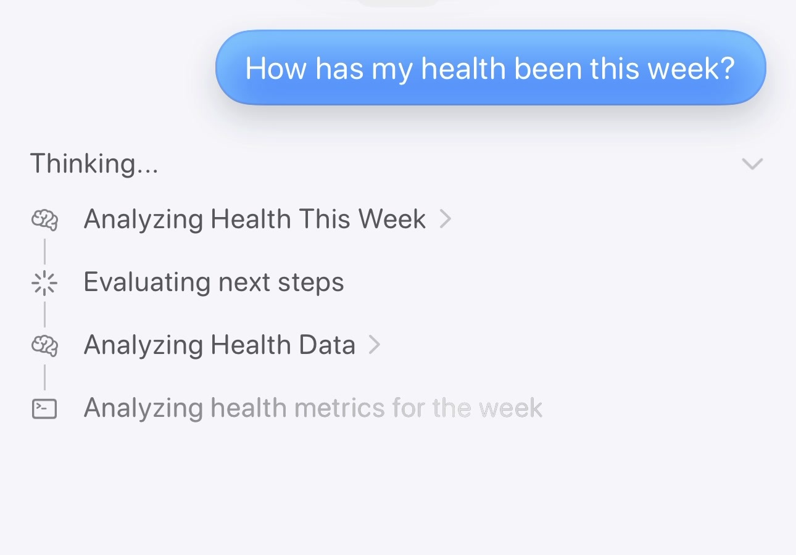
The recording is Bevel answering How has my health been this week? The thing that works — the thing to steal — is not the avatar or the sheet. It is this: unknown-duration work is a moving highlight through the words, and named actions accumulate under those words. You always know the system is working. You can see what it is doing. You can open a finished step. You are never staring at a spinner.
Composer is empty or has unsent text. Send is an arrow. Nothing shimmers.
“Thinking…” shimmers. The current action shimmers. Older actions sit still. Stop replaces Send.
Glow gone. Header becomes “Thought for N seconds.” Tree collapses. Answer is the hero.
(informative) Timed from source-video.mp4.
| Time | What you see | Rule it implies |
|---|---|---|
| 0–8s | Empty chat, greeting, composer focused, keyboard up. | Waiting. No thinking chrome yet. |
| ~9s | Send. Keyboard drops. User bubble docks under a “New chat / Today” header. | The turn exists the instant send is hit. |
| ~10s | “Thinking…” appears immediately, already shimmering. Send becomes a filled stop square. | REQ-001. Do not wait for the first tool call. |
| ~13s | Two rows appear: brain “Analyzing Health This Week ›” and sparkle “Evaluating next steps”. Header gets a chevron. | Tree is born under the status. Collapse exists only once there is a tree. |
| ~19s | More rows. The newest (“Analyzing health metrics for the week”) is pale, no chevron — same shimmer as the status. | Only the live row glows. It is not tappable yet. |
| ~22s | That row snaps solid and grows a chevron. | Completion is a one-frame state change, not a fade of the whole tree. |
| ~24s | Tap opens a sheet titled with the action name, payload labeled “Python”. | Finished inspectable rows are doors, not decoration. |
| ~32s | Label becomes “Thought for 20 seconds.” Shimmer gone. Answer starts under the tree. Stop becomes Send. | Terminal label is a duration. Answer is a sibling below, not a child. |
| ~37s | Answer overflows. A down-arrow chip sits above the composer. | If the user is not pinned, give them a jump to the live end. |
It is not a spinner. It is not a bar. It is not a pulsing opacity on a bubble. A highlight band travels through the glyphs of the live text — the same family of motion as a skeleton loader, applied to real words instead of gray bars.
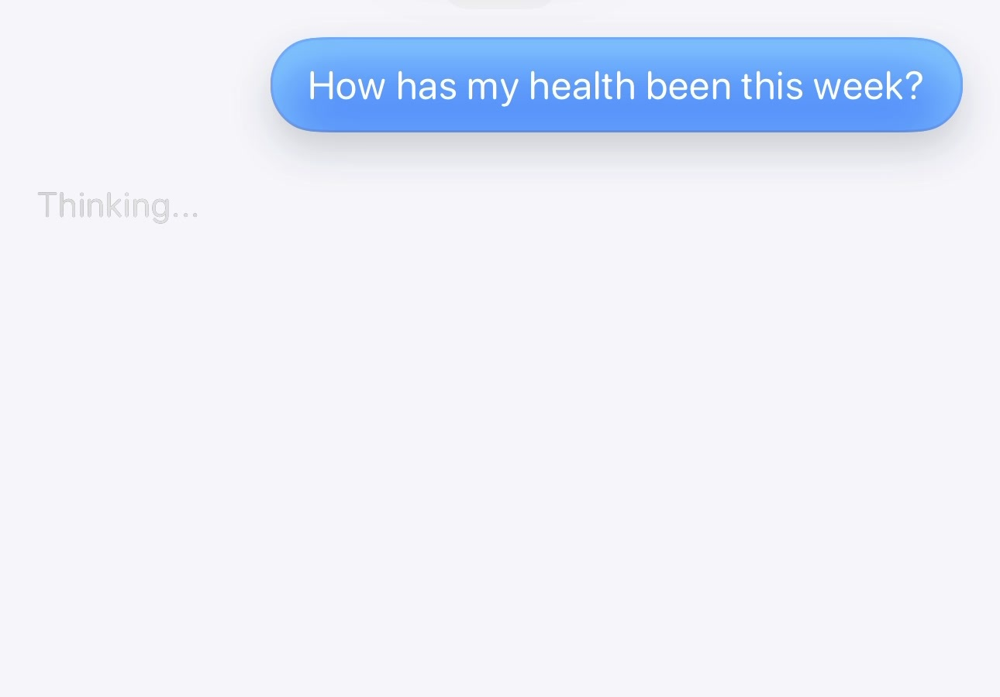
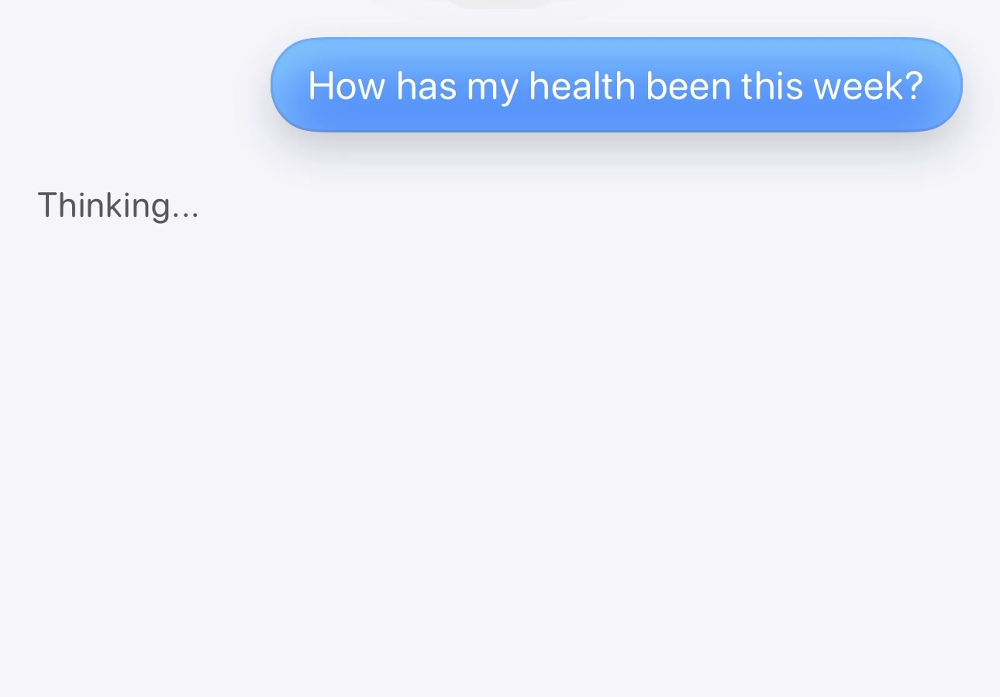
| Token | Value | Why |
|---|---|---|
| sweep-duration | 1.4s linear, infinite | Slow enough to read, fast enough to feel alive. Match the status and the live row — one clock. |
| base-contrast | ~40% of completed text | The word stays legible at the dim end. If it vanishes, it looks like a bug. |
| peak-contrast | ~90% of completed text | Never brighter than a finished row. Finished is the solid state; live is the moving one. |
| direction | left → right through the glyphs | Same direction as reading. A bounce or a vertical pulse reads as a spinner. |
| reduced-motion | static live color + “In progress” in the accessibility tree | The sweep is decoration. The state is not. |
Implementation sketch (informative): a wide linear-gradient
clipped to the text, background-size: 220% 100%, animating background-position. Do not animate
opacity on the whole node —
that fades the word in and out instead of walking through it.
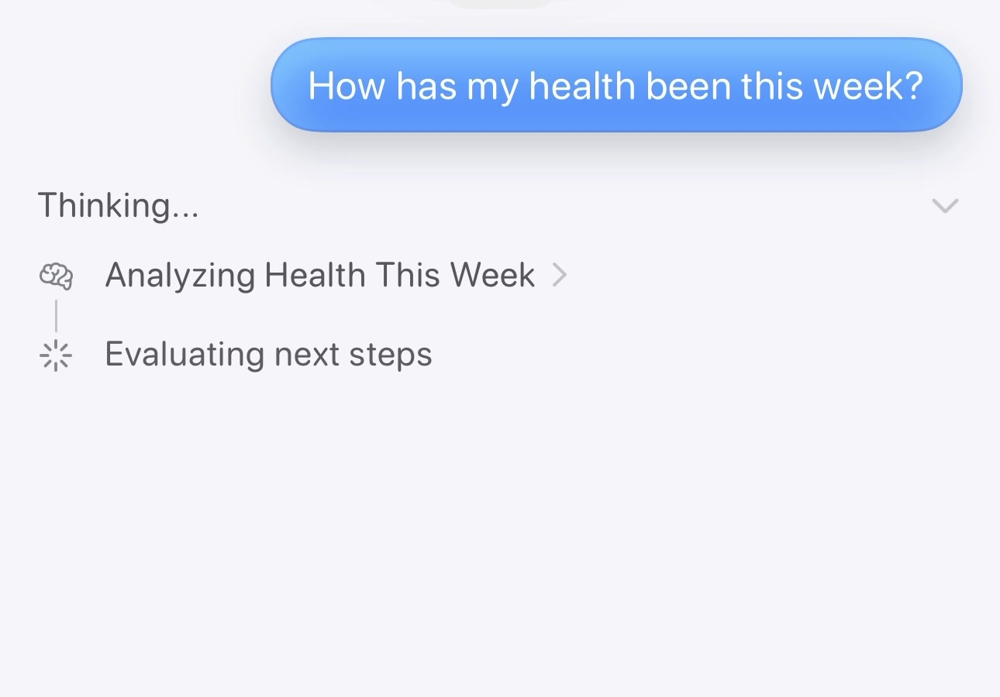
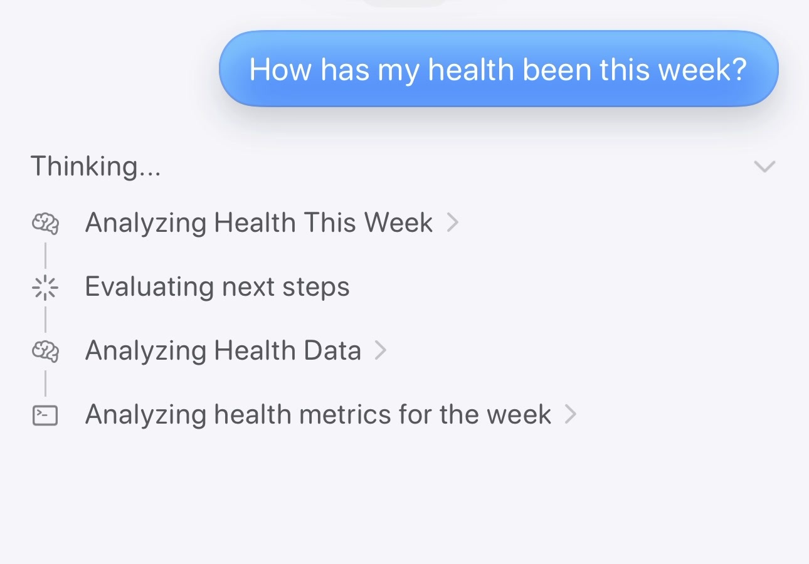
| Kind | Icon | Example | Inspectable? |
|---|---|---|---|
| reason | brain | Analyzing Health This Week | Usually yes — the reasoning block. |
| plan | sparkle | Evaluating next steps | No, in the video. IMPLEMENTATION-DEFINED. |
| tool | terminal | Analyzing health metrics for the week | Yes — code / query / result. |
| doc | page | Checking for life events earlier this week | Yes. |
Titles are short verb phrases, sentence or title case, no trailing ellipsis on completed rows. The live row may share the header’s ellipsis energy because it is still happening — the shimmer is that signal, not “…”.
The video’s completed state keeps every row visible and starts the answer underneath. That is the live-watching layout. A history UI has a different job: when you scroll back, you want the question, the fact that it thought, and the answer. The tool list is evidence, not the story.
Header becomes “Thought for 20 seconds.” Glow stops. All 10 rows stay open. Answer streams below. You have to hunt past the tree to read.
Same header. Glow stops. Tree collapses, unless the user had it expanded. Historical opens are always collapsed. Expand is one tap. Optional “10 steps” on the header.
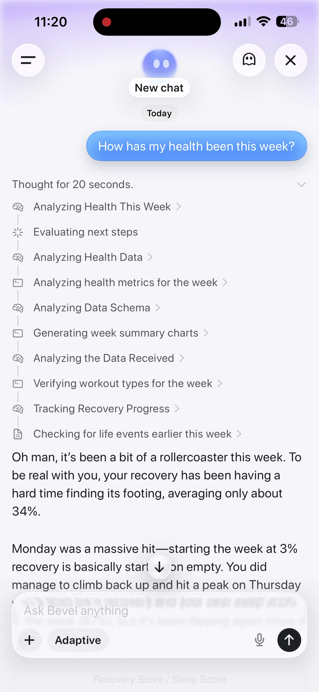
Same structure as the reference. Completed state uses the delta (collapsed). Drive it with the buttons.
One clock for both shimmers. One live row. Completion is a snap, not a dissolve. Done collapses. Expand still shows the full tree. Stop is a first-class terminal state.
If a future implementation cannot match this mock’s states, the implementation is wrong — not the mock.
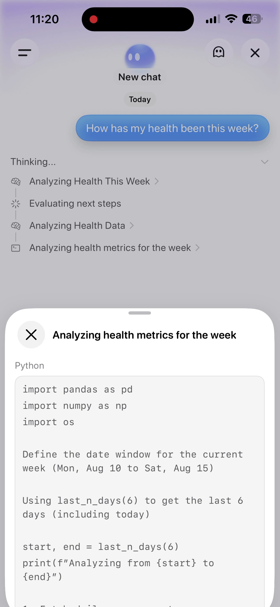
A renderer that can replay this log can paint live and history from the same code path.
{
"turn_id": "trn_01HZK2N5GQR9T8X4B6FJW3Y1AS",
"events": [
{ "type": "turn.accepted", "at": 0 },
{ "type": "action.started", "id": "a1", "kind": "reason", "title": "Analyzing Health This Week" },
{ "type": "action.started", "id": "a2", "parent_id": "a1", "kind": "plan", "title": "Evaluating next steps" },
{ "type": "action.completed", "id": "a2", "inspectable": false },
{ "type": "action.completed", "id": "a1", "inspectable": true },
{ "type": "action.started", "id": "a3", "kind": "reason", "title": "Analyzing Health Data" },
{ "type": "action.started", "id": "a4", "parent_id": "a3", "kind": "tool", "title": "Analyzing health metrics for the week" },
{ "type": "action.completed", "id": "a4", "inspectable": true, "payload": { "language": "Python", "body": "..." } },
{ "type": "turn.done", "duration_ms": 20100 }
]
}
Rules: one in_progress peer at
a time. Complete (or fail) the live row before starting the next
sibling. Children may exist only while their parent is still the
current group — or after the parent is terminal. The renderer
self-heals a second live peer by completing the older one, and treats
that as a producer bug.
Full frames from the recording, plus the 38-frame contact sheet.
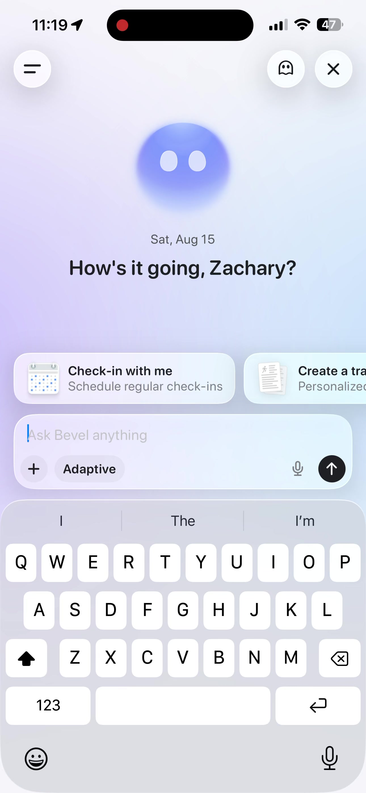
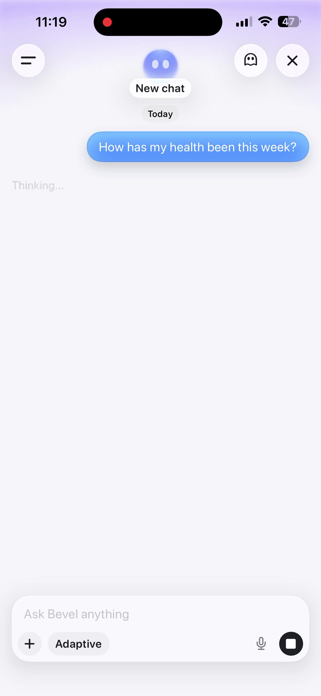
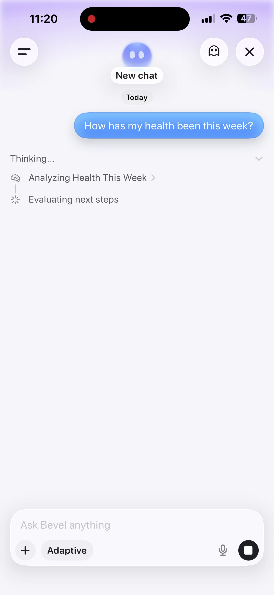
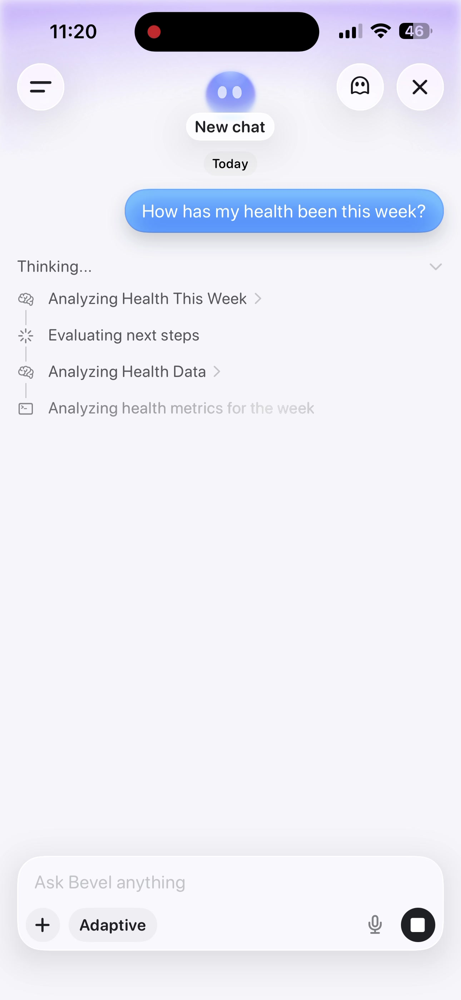
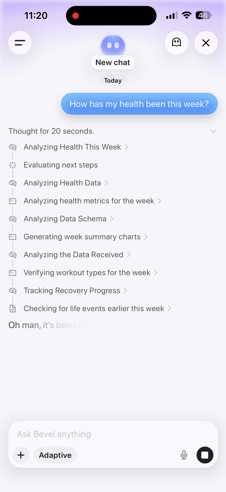
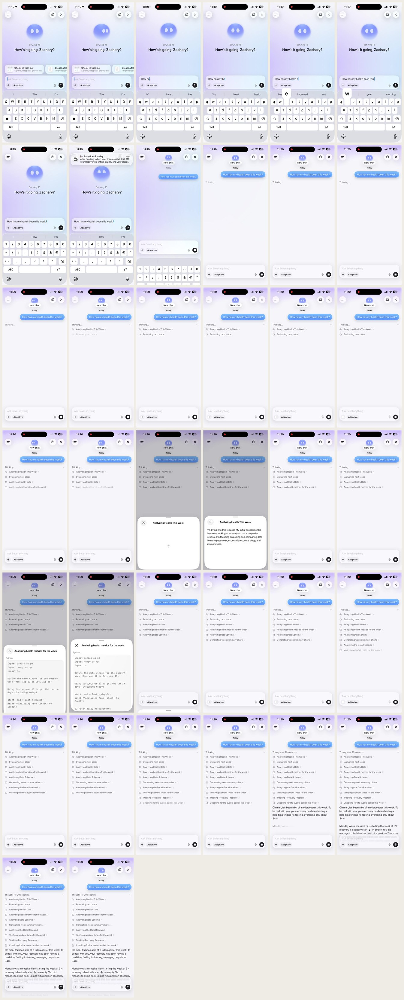
Normative text lives in SPEC.md. The buttons below serialize the contract this page is arguing for.
This spec is satisfied when every entry in
tests/spec/traceability.yaml
has
status: passing.